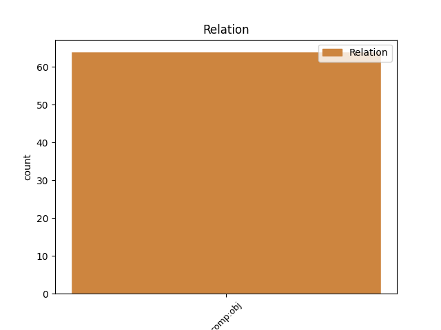
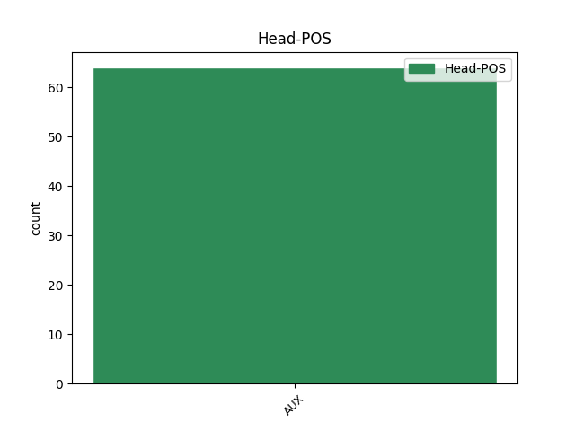
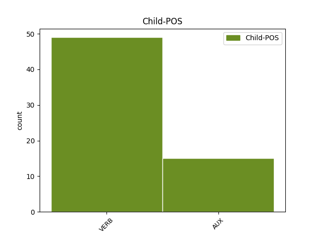

Distribution of features within this leaf



Agreement Rules sorted by frequency.
- When the dependent token is the direct object complements(comp:obj) of the head token, and the head token is AUX
1 Espadaler _ _ _ _ 0 _ _ _
2 ha _ _ _ _ 0 _ _ _
3 tornat _ _ _ _ 0 _ _ _
4 a _ _ _ _ 0 _ _ _
5 manifestar _ _ _ _ 0 _ _ _
6 que _ _ _ _ 0 _ _ _
7 ' _ _ _ _ 0 _ _ _
8 si _ _ _ _ 0 _ _ _
9 cal _ _ _ _ 0 _ _ _
10 anirem _ _ _ _ 0 _ _ _
11 als _ _ _ _ 0 _ _ _
12 Tribunals _ _ _ _ 0 _ _ _
13 per _ _ _ _ 0 _ _ _
14 fer _ _ _ _ 0 _ _ _
15 complir _ _ _ _ 0 _ _ _
16 la _ _ _ _ 0 _ _ _
17 llei _ _ _ _ 0 _ _ _
18 ' _ _ _ _ 0 _ _ _
19 i _ _ _ _ 0 _ _ _
20 ha _ _ _ _ 0 _ _ _
21 recordat _ _ _ _ 0 _ _ _
22 que _ _ _ _ 0 _ _ _
23 ' _ _ _ _ 0 _ _ _
24 en _ _ _ _ 0 _ _ _
25 tot _ _ _ _ 0 _ _ _
26 cas _ _ _ _ 0 _ _ _
27 serà ser AUX AUX Mood=Ind|Number=Sing|Person=3|Tense=Fut|VerbForm=Fin 0 _ _ _
28 el _ _ _ _ 0 _ _ _
29 poble _ _ _ _ 0 _ _ _
30 de _ _ _ _ 0 _ _ _
31 Catalunya _ _ _ _ 0 _ _ _
32 qui _ _ _ _ 0 _ _ _
33 podrà poder AUX AUX Mood=Ind|Number=Sing|Person=3|Tense=Fut|VerbForm=Fin 27 comp:obj _ _
34 decidir _ _ _ _ 0 _ _ _
35 lliurement _ _ _ _ 0 _ _ _
36 en _ _ _ _ 0 _ _ _
37 les _ _ _ _ 0 _ _ _
38 eleccions _ _ _ _ 0 _ _ _
39 quin _ _ _ _ 0 _ _ _
40 Govern _ _ _ _ 0 _ _ _
41 vol _ _ _ _ 0 _ _ _
42 ' _ _ _ _ 0 _ _ _
43 . _ _ _ _ 0 _ _ _
Disagree Examples:
1 Per _ _ _ _ 0 _ _ _
2 a _ _ _ _ 0 _ _ _
3 la _ _ _ _ 0 _ _ _
4 creació _ _ _ _ 0 _ _ _
5 d' _ _ _ _ 0 _ _ _
6 aquesta _ _ _ _ 0 _ _ _
7 plataforma _ _ _ _ 0 _ _ _
8 Girona _ _ _ _ 0 _ _ _
9 Turística _ _ _ _ 0 _ _ _
10 compta _ _ _ _ 0 _ _ _
11 amb _ _ _ _ 0 _ _ _
12 el _ _ _ _ 0 _ _ _
13 suport _ _ _ _ 0 _ _ _
14 d' _ _ _ _ 0 _ _ _
15 Intercom _ _ _ _ 0 _ _ _
16 que _ _ _ _ 0 _ _ _
17 és ser AUX AUX Mood=Ind|Number=Sing|Person=3|Tense=Pres|VerbForm=Fin 0 _ _ _
18 qui _ _ _ _ 0 _ _ _
19 posarà posar VERB VERB Mood=Ind|Number=Sing|Person=3|Tense=Fut|VerbForm=Fin 17 comp:obj _ _
20 els _ _ _ _ 0 _ _ _
21 mitjans _ _ _ _ 0 _ _ _
22 tècnics _ _ _ _ 0 _ _ _
23 per _ _ _ _ 0 _ _ _
24 a _ _ _ _ 0 _ _ _
25 l' _ _ _ _ 0 _ _ _
26 elaboració _ _ _ _ 0 _ _ _
27 de _ _ _ _ 0 _ _ _
28 la _ _ _ _ 0 _ _ _
29 pàgina _ _ _ _ 0 _ _ _
30 web _ _ _ _ 0 _ _ _
31 i _ _ _ _ 0 _ _ _
32 el _ _ _ _ 0 _ _ _
33 seu _ _ _ _ 0 _ _ _
34 manteniment _ _ _ _ 0 _ _ _
35 . _ _ _ _ 0 _ _ _
1 I _ _ _ _ 0 _ _ _
2 per _ _ _ _ 0 _ _ _
3 tant _ _ _ _ 0 _ _ _
4 , _ _ _ _ 0 _ _ _
5 mentre _ _ _ _ 0 _ _ _
6 ells _ _ _ _ 0 _ _ _
7 governin _ _ _ _ 0 _ _ _
8 , _ _ _ _ 0 _ _ _
9 qui _ _ _ _ 0 _ _ _
10 continuarà _ _ _ _ 0 _ _ _
11 governant _ _ _ _ 0 _ _ _
12 seran _ _ _ _ 0 _ _ _
13 els _ _ _ _ 0 _ _ _
14 poderosos _ _ _ _ 0 _ _ _
15 , _ _ _ _ 0 _ _ _
16 seran ser AUX AUX Mood=Ind|Number=Plur|Person=3|Tense=Fut|VerbForm=Fin 0 _ _ _
17 els _ _ _ _ 0 _ _ _
18 qui _ _ _ _ 0 _ _ _
19 tenen tenir VERB VERB Mood=Ind|Number=Plur|Person=3|Tense=Pres|VerbForm=Fin 16 comp:obj _ _
20 a _ _ _ _ 0 _ _ _
21 les _ _ _ _ 0 _ _ _
22 seves _ _ _ _ 0 _ _ _
23 mans _ _ _ _ 0 _ _ _
24 el _ _ _ _ 0 _ _ _
25 gran _ _ _ _ 0 _ _ _
26 capital _ _ _ _ 0 _ _ _
27 . _ _ _ _ 0 _ _ _
1 " _ _ _ _ 0 _ _ _
2 Les _ _ _ _ 0 _ _ _
3 persones _ _ _ _ 0 _ _ _
4 que _ _ _ _ 0 _ _ _
5 comprin _ _ _ _ 0 _ _ _
6 on-line _ _ _ _ 0 _ _ _
7 seran ser AUX AUX Mood=Ind|Number=Plur|Person=3|Tense=Fut|VerbForm=Fin 0 _ _ _
8 les _ _ _ _ 0 _ _ _
9 que _ _ _ _ 0 _ _ _
10 tinguin tenir VERB VERB Mood=Sub|Number=Plur|Person=3|Tense=Pres|VerbForm=Fin 7 comp:obj _ _
11 un _ _ _ _ 0 _ _ _
12 horari _ _ _ _ 0 _ _ _
13 de _ _ _ _ 0 _ _ _
14 feina _ _ _ _ 0 _ _ _
15 incompatible _ _ _ _ 0 _ _ _
16 amb _ _ _ _ 0 _ _ _
17 el _ _ _ _ 0 _ _ _
18 dels _ _ _ _ 0 _ _ _
19 supermercats _ _ _ _ 0 _ _ _
20 . _ _ _ _ 0 _ _ _
1 En _ _ _ _ 0 _ _ _
2 la _ _ _ _ 0 _ _ _
3 interlocutòria _ _ _ _ 0 _ _ _
4 de _ _ _ _ 0 _ _ _
5 llibertat _ _ _ _ 0 _ _ _
6 , _ _ _ _ 0 _ _ _
7 l' _ _ _ _ 0 _ _ _
8 Audiència _ _ _ _ 0 _ _ _
9 va _ _ _ _ 0 _ _ _
10 estimar _ _ _ _ 0 _ _ _
11 que _ _ _ _ 0 _ _ _
12 dos _ _ _ _ 0 _ _ _
13 anys _ _ _ _ 0 _ _ _
14 de _ _ _ _ 0 _ _ _
15 presó _ _ _ _ 0 _ _ _
16 preventiva _ _ _ _ 0 _ _ _
17 , _ _ _ _ 0 _ _ _
18 com _ _ _ _ 0 _ _ _
19 són ser AUX AUX Mood=Ind|Number=Plur|Person=3|Tense=Pres|VerbForm=Fin 0 _ _ _
20 els _ _ _ _ 0 _ _ _
21 que _ _ _ _ 0 _ _ _
22 portaven portar VERB VERB Mood=Ind|Number=Plur|Person=3|Tense=Imp|VerbForm=Fin 19 comp:obj _ _
23 entre _ _ _ _ 0 _ _ _
24 reixes _ _ _ _ 0 _ _ _
25 , _ _ _ _ 0 _ _ _
26 era _ _ _ _ 0 _ _ _
27 suficient _ _ _ _ 0 _ _ _
28 , _ _ _ _ 0 _ _ _
29 i _ _ _ _ 0 _ _ _
30 va _ _ _ _ 0 _ _ _
31 fins _ _ _ _ 0 _ _ _
32 i _ _ _ _ 0 _ _ _
33 tot _ _ _ _ 0 _ _ _
34 argumentar _ _ _ _ 0 _ _ _
35 que _ _ _ _ 0 _ _ _
36 ' _ _ _ _ 0 _ _ _
37 no _ _ _ _ 0 _ _ _
38 s' _ _ _ _ 0 _ _ _
39 adverteix _ _ _ _ 0 _ _ _
40 risc _ _ _ _ 0 _ _ _
41 que _ _ _ _ 0 _ _ _
42 els _ _ _ _ 0 _ _ _
43 processats _ _ _ _ 0 _ _ _
44 reincideixin _ _ _ _ 0 _ _ _
45 en _ _ _ _ 0 _ _ _
46 conductes _ _ _ _ 0 _ _ _
47 delictives _ _ _ _ 0 _ _ _
48 similars _ _ _ _ 0 _ _ _
49 ' _ _ _ _ 0 _ _ _
50 , _ _ _ _ 0 _ _ _
51 això _ _ _ _ 0 _ _ _
52 és _ _ _ _ 0 _ _ _
53 , _ _ _ _ 0 _ _ _
54 els _ _ _ _ 0 _ _ _
55 abusos _ _ _ _ 0 _ _ _
56 sexuals _ _ _ _ 0 _ _ _
57 i _ _ _ _ 0 _ _ _
58 agressions _ _ _ _ 0 _ _ _
59 que _ _ _ _ 0 _ _ _
60 els _ _ _ _ 0 _ _ _
61 imputen _ _ _ _ 0 _ _ _
62 les _ _ _ _ 0 _ _ _
63 acusacions _ _ _ _ 0 _ _ _
64 . _ _ _ _ 0 _ _ _
1 Si _ _ _ _ 0 _ _ _
2 ahir _ _ _ _ 0 _ _ _
3 el _ _ _ _ 0 _ _ _
4 ministre _ _ _ _ 0 _ _ _
5 Pío _ _ _ _ 0 _ _ _
6 Cabanillas _ _ _ _ 0 _ _ _
7 demanava _ _ _ _ 0 _ _ _
8 al _ _ _ _ 0 _ _ _
9 lehendakari _ _ _ _ 0 _ _ _
10 una _ _ _ _ 0 _ _ _
11 " _ _ _ _ 0 _ _ _
12 resposta _ _ _ _ 0 _ _ _
13 immediata _ _ _ _ 0 _ _ _
14 " _ _ _ _ 0 _ _ _
15 a _ _ _ _ 0 _ _ _
16 l' _ _ _ _ 0 _ _ _
17 oferta _ _ _ _ 0 _ _ _
18 de _ _ _ _ 0 _ _ _
19 cooperació _ _ _ _ 0 _ _ _
20 antiterrorista _ _ _ _ 0 _ _ _
21 formulada _ _ _ _ 0 _ _ _
22 per _ _ _ _ 0 _ _ _
23 Aznar _ _ _ _ 0 _ _ _
24 , _ _ _ _ 0 _ _ _
25 divendres _ _ _ _ 0 _ _ _
26 serà ser AUX AUX Mood=Ind|Number=Sing|Person=3|Tense=Fut|VerbForm=Fin 0 _ _ _
27 el _ _ _ _ 0 _ _ _
28 vicepresident _ _ _ _ 0 _ _ _
29 Mariano _ _ _ _ 0 _ _ _
30 Rajoy _ _ _ _ 0 _ _ _
31 qui _ _ _ _ 0 _ _ _
32 exigeixi exigir VERB VERB Mood=Sub|Number=Sing|Person=3|Tense=Pres|VerbForm=Fin 26 comp:obj _ _
33 més _ _ _ _ 0 _ _ _
34 coordinació _ _ _ _ 0 _ _ _
35 policial _ _ _ _ 0 _ _ _
36 al _ _ _ _ 0 _ _ _
37 conseller _ _ _ _ 0 _ _ _
38 basc _ _ _ _ 0 _ _ _
39 d' _ _ _ _ 0 _ _ _
40 Interior _ _ _ _ 0 _ _ _
41 , _ _ _ _ 0 _ _ _
42 Javier _ _ _ _ 0 _ _ _
43 Balza _ _ _ _ 0 _ _ _
44 . _ _ _ _ 0 _ _ _